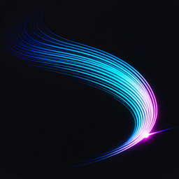

Svinga Loss
Disc golf throw analysis
Svinga Loss turns a slow-motion video of your disc golf throw into motion trails of your arm, coloured by speed — from blue (slow) through cyan and white to magenta at the release. Everything runs on your iPhone.
Support
Questions, problems or feedback? Email johanrydgard@gmail.com.
Tips for good results
- Film in the Camera app's Slo-mo mode (120 or 240 fps).
- Use the original recording. Slow-motion videos that were exported or sent through some apps become 30 fps copies, which can't be analysed well. When sharing, choose Options → All Photos Data.
- Film from the side with the whole thrower in the frame, in good light.
- If the release or throw style is wrong, adjust them in the editor before tapping Process.
Privacy
Svinga Loss collects no data. Read the privacy policy.